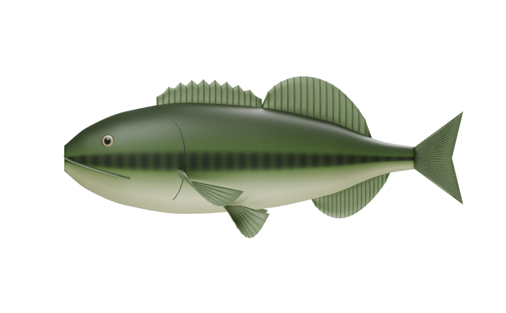
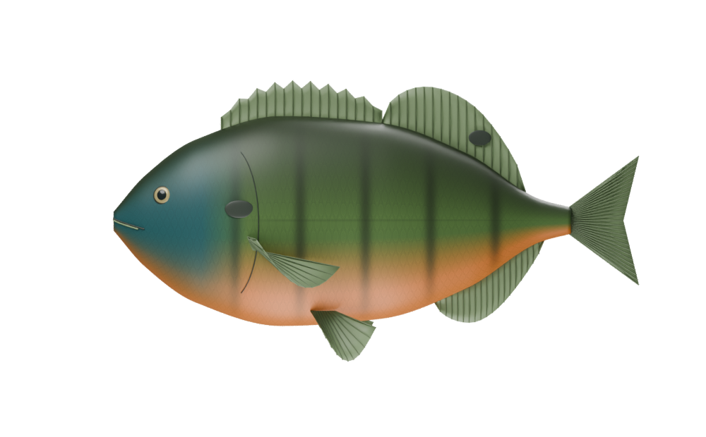
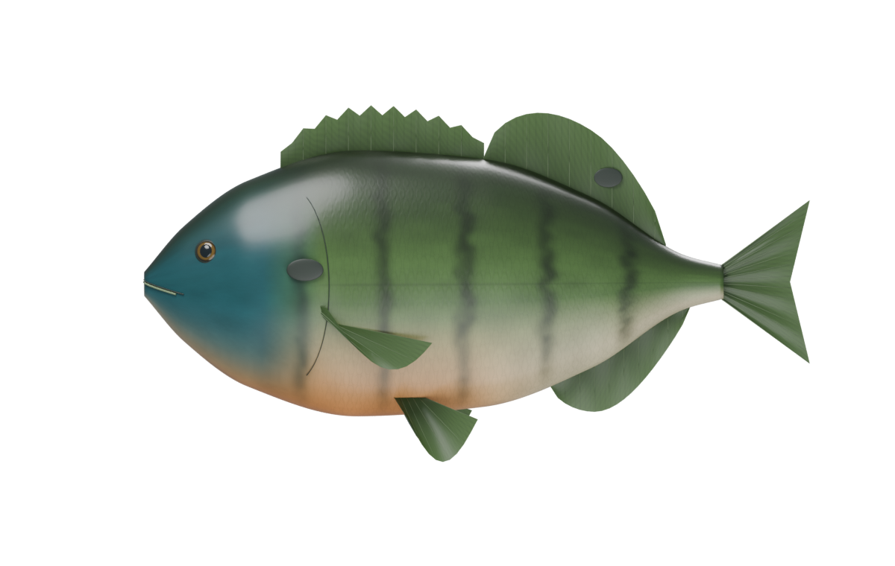
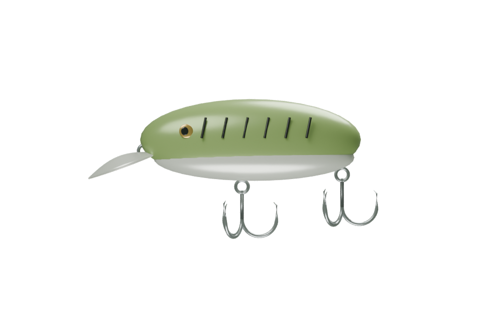
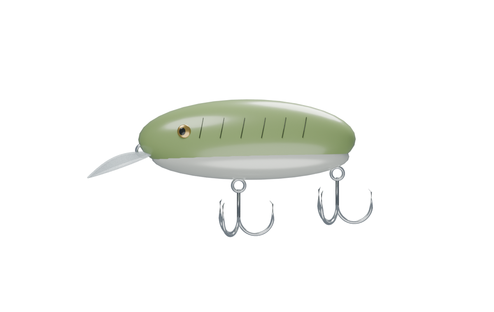

The next specimen study
Original Blender models with finer scale relief, less regular markings, detailed irises, thinner fins, and more natural surface reflections. Lighting and render resolution also changed between these studies; this is an appearance comparison, not a controlled material-only test.
Bass

Earlier study Refined materials and geometry
Refined materials and geometryBluegill

Earlier study
Refined materials and geometryChannel Catfish
 Earlier study
Earlier study Refined materials and geometry
Refined materials and geometryCrankbait

Earlier study
Refined materials and geometryAll previous scenes and editable refinements are preserved. These remain illustrative species studies, not independently validated anatomical reconstructions.